Rezatý Rakety
Alternativní bigbít z Plzně
Kdy hrajemeKoncerty
Momento…
Odehrané (…)
Momento…
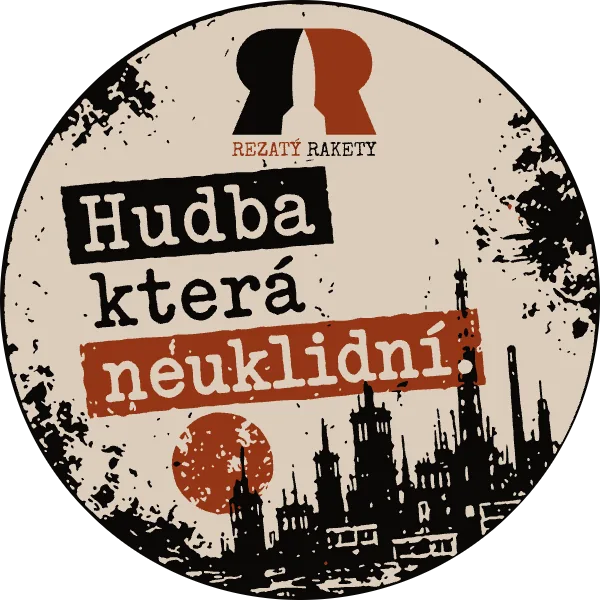
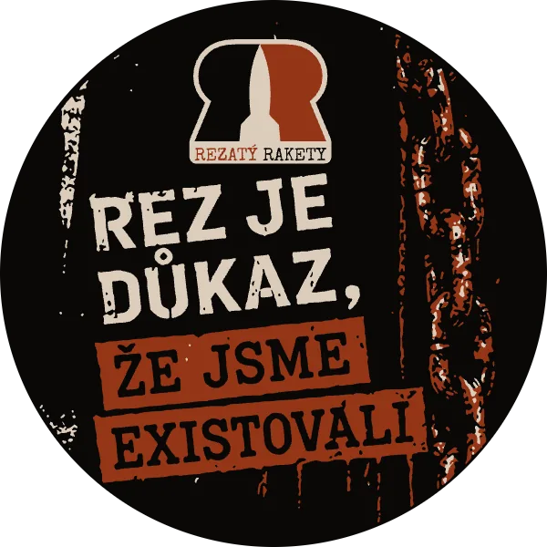
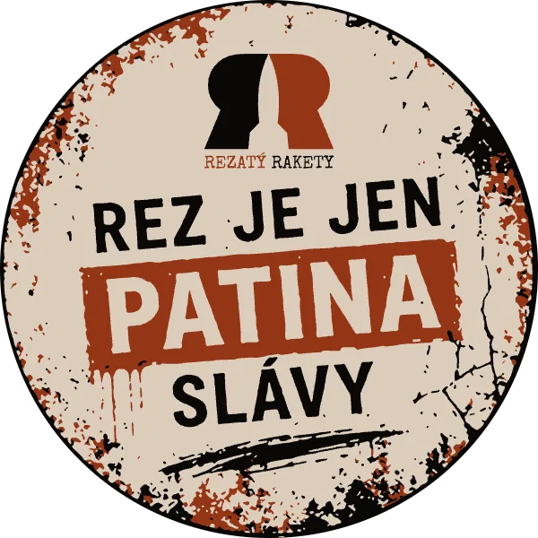
O Raketách
Rezatý Rakety je autorský rockový chameleon z Plzně založený v roce 2008.
Po koketování s blues přešly Rakety k rocku s odkazem k tradici českého bigbítu. Ani to však není poslední zastávkou v hudebním vývoji skupiny, jelikož se do její tvorby začaly prolínat vlivy undergroundu a tvrdšího rocku.
Poznávacím znamením Rezatých Raket jsou vlastní, česky psané texty, které se nebojí ironie a sarkasmu a zrcadlu společnosti nastavují zrcadlo.
Posádka
- Vanadbasová kytara
- Miroslav Juhy Juhoskytara, zpěv
- Jan Holotabicí
Historie
-
První koncert.
-
Videoklip Krise středního věku.
-
Vlastníma silama vydaný záznam z koncertu …a to už dneska nikdo neposlouchá.
-
Začíná série pravidelných koncertů pod hlavičkou Trojka z blues.
-
Videoklip Rádio Starý dobrý časy.
-
Studiové album Starý dobrý časy.
-
Poslední ze série koncertů Trojek.
-
Animovaný videoklip Ozubený Hodinář.
-
Videoklip Svobodný člověk (ve svobodné zemi).
-
Animovaný videoklip Pan Josef Novák.
-
Animovaný videoklip Jericho.
-
Animované videoklipy Nad piánem pán a Zubatá.
Nahrávky
-
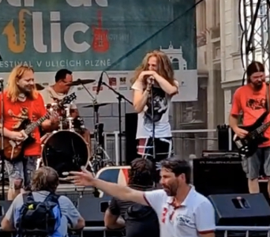
2023 Hamlet Živě -
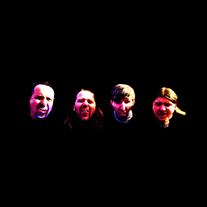
2022 Zubatá Animovaný klip -
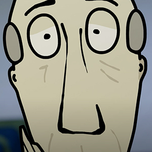
2022 Nad piánem pán Animovaný klip -
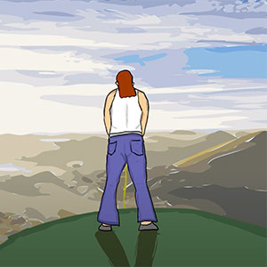
2019 Pan Josef Novák Animovaný klip -
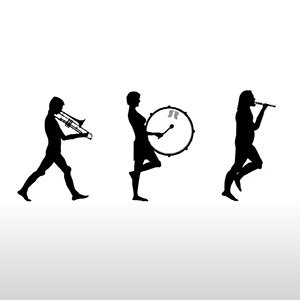
2019 Jericho Animovaný klip -
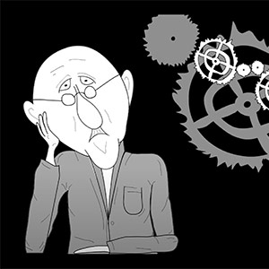
2016 Ozubený Hodinář Animovaný klip -
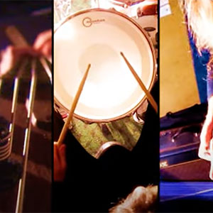
2016 Svobodný člověk (ve svobodné zemi) Videoklip -
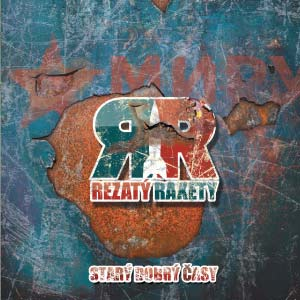
2011 Starý dobrý časy Studiové album - 2011 Rádio Starý dobrý časy Videoklip
-
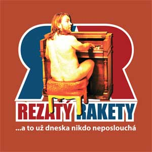
2009 …a to už dneska nikdo neposlouchá Záznam z koncertu - 2009 Krise středního věku Videoklip
Pro pořadatele
Technické požadavky (rider)
- 2× zpěvový mikrofon
- standardní nazvučení bicích
- mikrofon pro basový zesilovač
- 2× mikrofon pro kytarový zesilovač Vox AC10 (stereo)
Stage plan

Logo ke stažení
-
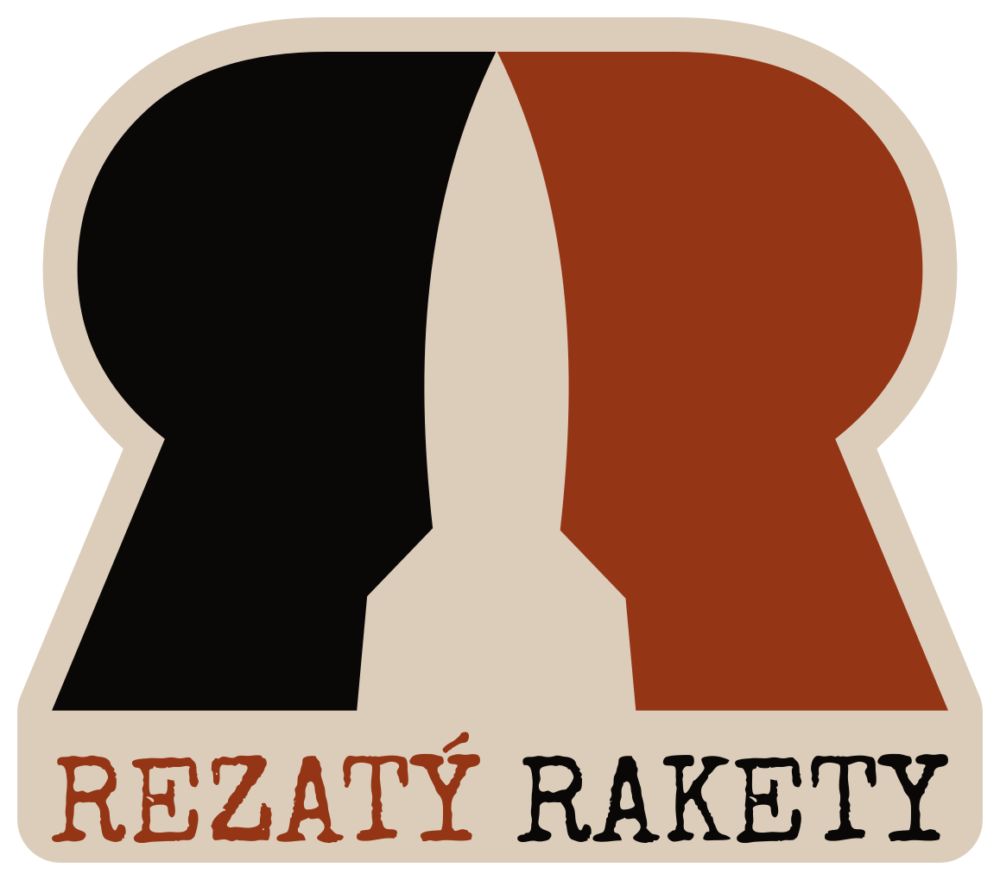
-
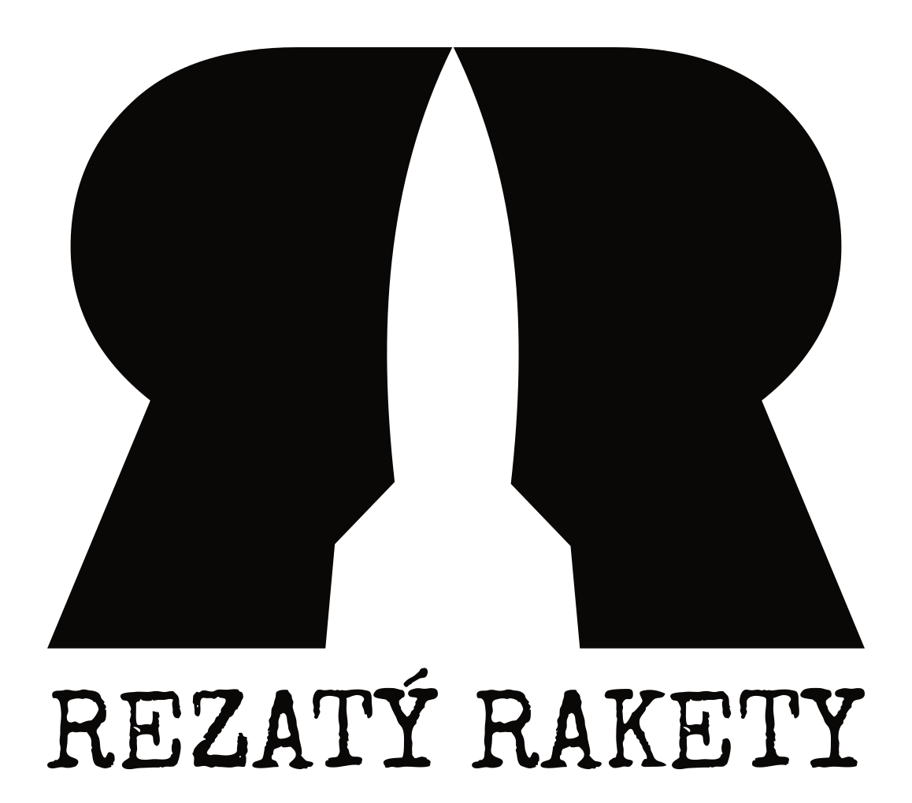
-
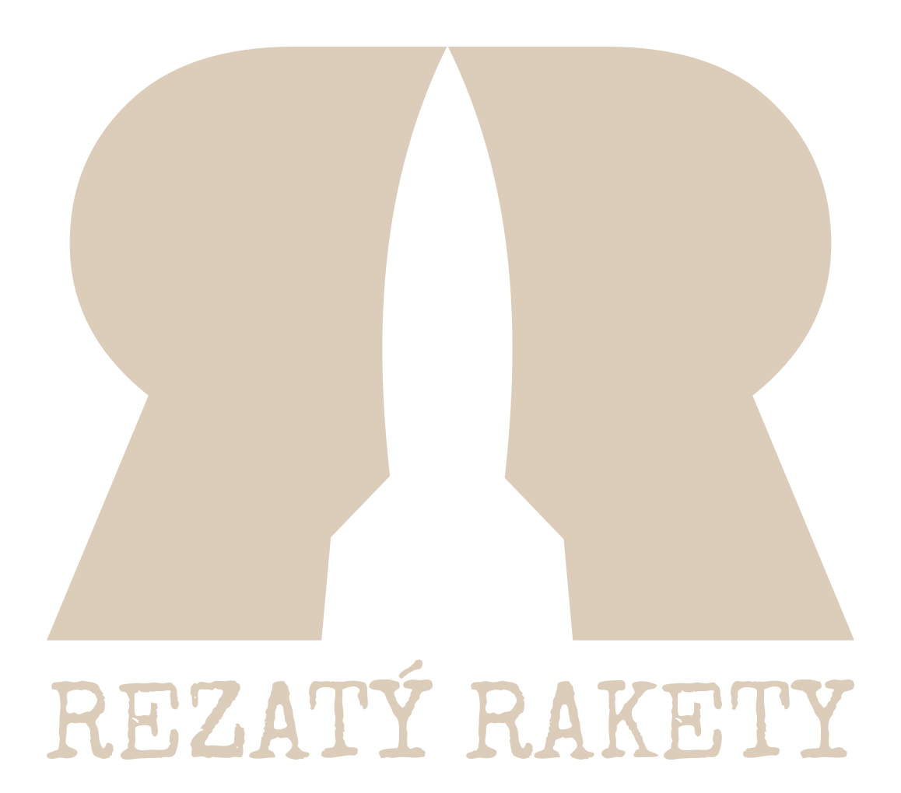


Kontakt
- Miroslav Juhy Juhos
- 605 376 741
- Plzeň